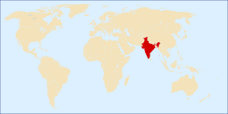
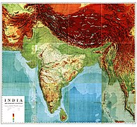

Індія — південноазійська країна, що межує з шістьма іншими країнами: на півночі — з Китаєм (спільний кордон — 2659 км), Непалом (1770 км) і Бутаном (659 км), на сході з М'янмою (1468 км) і Бангладеш (4142 км), на заході — з Пакистаном (3190 км). Загальна довжина державного кордону — 13 888 км. Індія на заході омивається водами Аравійського моря, на сході Бенгальської затоки Індійського океану. На півдні вузька Полкська протока і Манарська затока відділяють державу від Шрі-Ланки. Протокою Грейт-Ченнел між островами Великий Нікобар і Суматра проходить морський кордон між Індією та Індонезією. Загальна довжина морського узбережжя 7000 км.
Рельєф
Середні висоти — 160 м; найнижча точка — рівень вод Індійського океану (0 м); найвища точка — гора Канченджанґа (8598 м). Індія розташована на Індо-Гангській рівнині, частині Гімалаїв і Каракорума. Близько ¾ території країни — рівнини і плоскогір'я. Майже весь Індостан займає Деканське плоскогір'я (300—900 м над рівнем моря). На північному-заході великі території займають базальтові покриви (трапи). На півдні півострова — столові масиви висотою до 2700 м. На півночі від Індостану в обширному передгірському прогині — алювіальна Індо-Гангська рівнина, над якою з півночі трьома крутими сходинками підіймається найвища гірська система Землі — Гімалаї (висота в Індії до 8126 м) і гори Каракорум.
